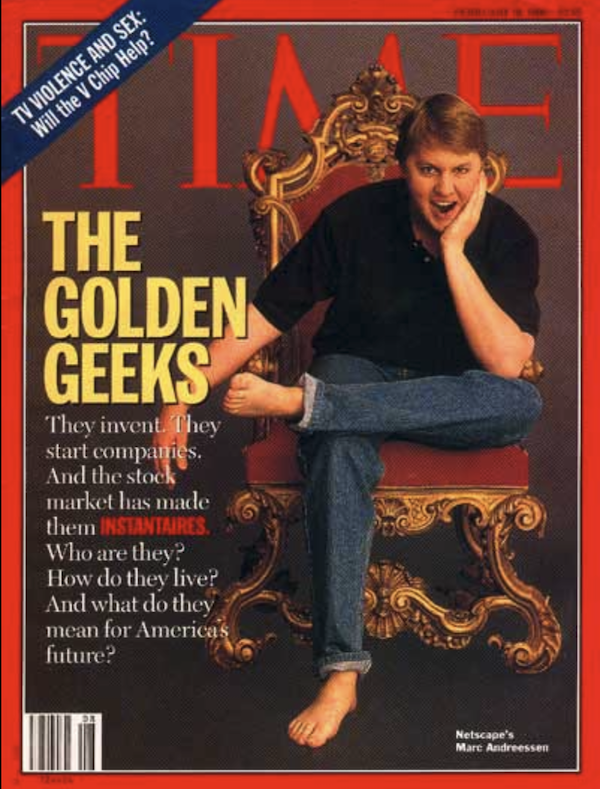
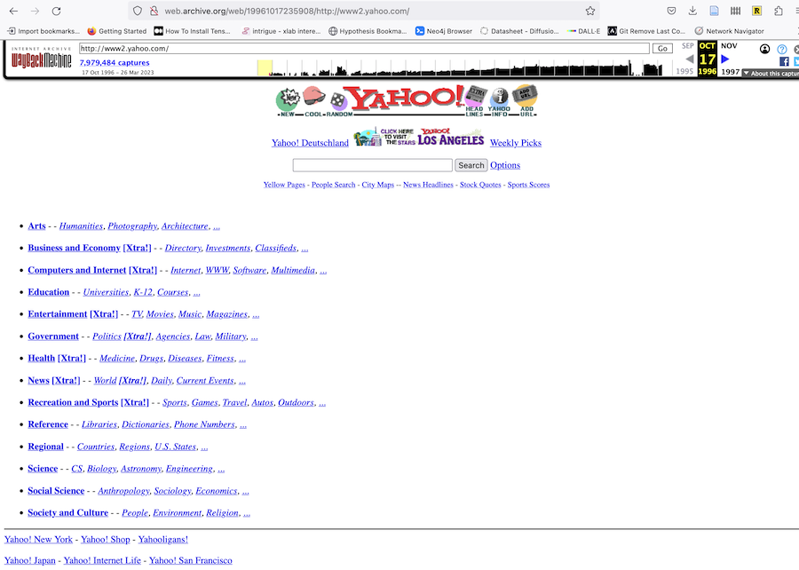
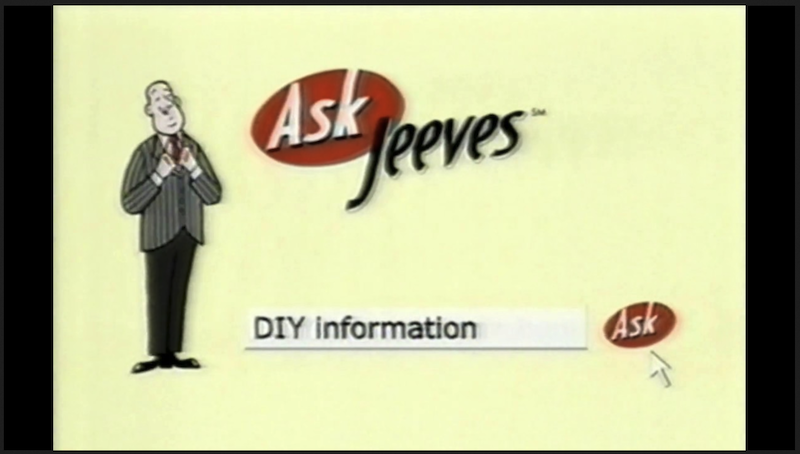
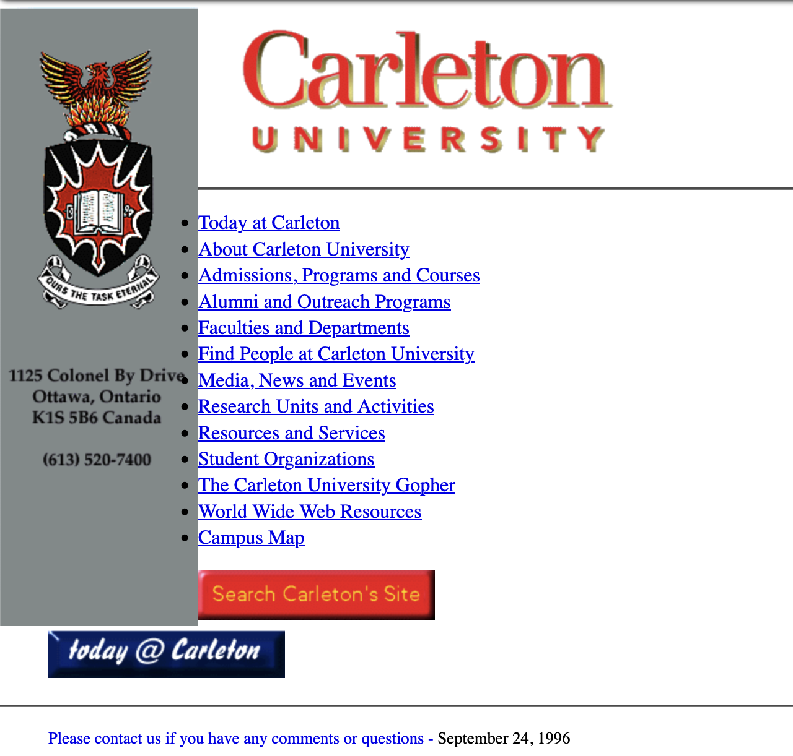
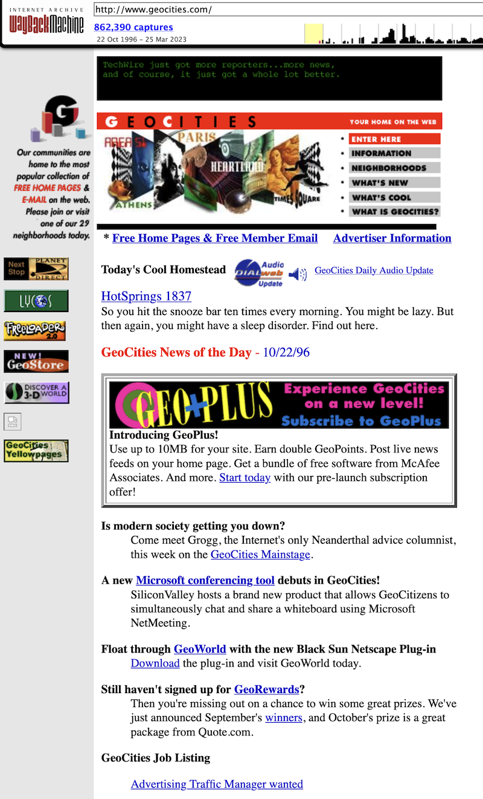
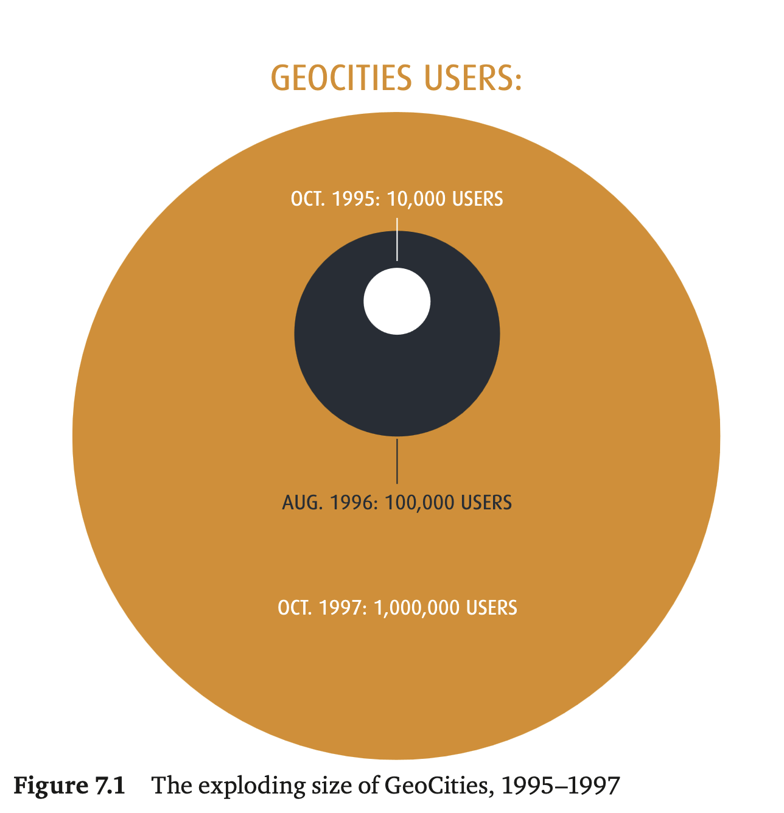
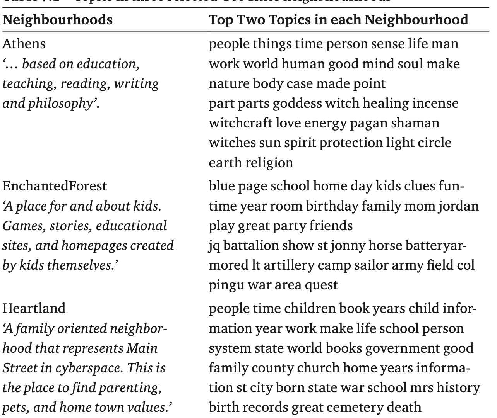

<!DOCTYPE html>
<html lang="en">
  <head>
    <meta charset="utf-8" />
    <meta name="viewport" content="width=device-width, initial-scale=1.0, maximum-scale=1.0, user-scalable=no" />

    <title></title>
    <link rel="stylesheet" href="dist/reveal.css" />
    <link rel="stylesheet" href="dist/theme/simple.css" id="theme" />
    <link rel="stylesheet" href="plugin/highlight/zenburn.css" />
	<link rel="stylesheet" href="css/layout.css" />
	<link rel="stylesheet" href="plugin/customcontrols/style.css">


    <script defer src="dist/fontawesome/all.min.js"></script>

	<script type="text/javascript">
		var forgetPop = true;
		function onPopState(event) {
			if(forgetPop){
				forgetPop = false;
			} else {
				parent.postMessage(event.target.location.href, "app://obsidian.md");
			}
        }
		window.onpopstate = onPopState;
		window.onmessage = event => {
			if(event.data == "reload"){
				window.document.location.reload();
			}
			forgetPop = true;
		}

		function fitElements(){
			const itemsToFit = document.getElementsByClassName('fitText');
			for (const item in itemsToFit) {
				if (Object.hasOwnProperty.call(itemsToFit, item)) {
					var element = itemsToFit[item];
					fitElement(element,1, 1000);
					element.classList.remove('fitText');
				}
			}
		}

		function fitElement(element, start, end){

			let size = (end + start) / 2;
			element.style.fontSize = `${size}px`;

			if(Math.abs(start - end) < 1){
				while(element.scrollHeight > element.offsetHeight){
					size--;
					element.style.fontSize = `${size}px`;
				}
				return;
			}

			if(element.scrollHeight > element.offsetHeight){
				fitElement(element, start, size);
			} else {
				fitElement(element, size, end);
			}		
		}


		document.onreadystatechange = () => {
			fitElements();
			if (document.readyState === 'complete') {
				if (window.location.href.indexOf("?export") != -1){
					parent.postMessage(event.target.location.href, "app://obsidian.md");
				}
				if (window.location.href.indexOf("print-pdf") != -1){
					let stateCheck = setInterval(() => {
						clearInterval(stateCheck);
						window.print();
					}, 250);
				}
			}
	};


        </script>
  </head>
  <body>
    <div class="reveal">
      <div class="slides"><section  data-markdown><script type="text/template"><!-- .slide: class="drop" data-background-opacity="0.5" data-background-image="https://www.wsge.org/wp-content/uploads/sites/41/2016/09/ilovethe90s.jpg" -->
<div class="" style="position: absolute; left: 0px; top: 0px; height: 700px; width: 960px; min-height: 700px; display: flex; flex-direction: column; align-items: center; justify-content: center" absolute="true">


</div>

<aside class="notes"><p>the 90s were ...quite the time. cold war over. soviet union dead. western liberalism seemed to be the thing. new labour in power in the uk in the mid 90s. Although - antitrust regulations being dialed back in the US, regulations preventing monopolies in various communications techs being dialed back, culture war shit is starting to become formalized, strategized, promoted; neoliberalism ascendent &#39;everything should be subject to market forces&#39;. conditions for exuberant growth. I should&#39;ve started a web company. I should&#39;ve learned some html. By the time I did, it was too late; but for a brief moment, if you could write some html, people fell all over themselves to give you money. Remember though: this was all a result of policy and habits (some going back over 100 years) of handing off techs paid for by gov&#39;ts to market operators, who quickly try to corner the market. History doesn&#39;t repeat, but it does rhyme.</p>
</aside></script></section><section  data-markdown><script type="text/template"><!-- .slide: class="drop" -->
<div class="" style="position: absolute; left: 0px; top: 0px; height: 700px; width: 960px; min-height: 700px; display: flex; flex-direction: column; align-items: center; justify-content: center" absolute="true">


</div>

<aside class="notes"><p>We&#39;re getting into web history now; the web being a distinct layer on top of the internet. One could do an entire course on the history of the web I should think (I won&#39;t though). But we&#39;re going to finish up with key defining moments of web history that set up our current world where everything is so intertwined that all of this just becomes.... history, full stop.</p>
</aside></script></section><section  data-markdown><script type="text/template"><!-- .slide: class="drop" -->
<div class="" style="position: absolute; left: 0px; top: 0px; height: 700px; width: 960px; min-height: 700px; display: flex; flex-direction: column; align-items: center; justify-content: center" absolute="true">

Some websites that still linger from the pre-graphical-browser age, the incunabula of the web...

[https://www.w3.org/History/19921103-hypertext/hypertext/WWW/TheProject.html](https://www.w3.org/History/19921103-hypertext/hypertext/WWW/TheProject.html)
</div></script></section><section  data-markdown><script type="text/template"><!-- .slide: class="drop" -->
<div class="" style="position: absolute; left: 0px; top: 0px; height: 700px; width: 960px; min-height: 700px; display: flex; flex-direction: column; align-items: center; justify-content: center" absolute="true">

## On Tap Today:
- Browser Wars
- Lists and Search
- Homesteading and Community
- Section 230
</div></script></section><section  data-markdown><script type="text/template"><!-- .slide: class="drop" -->
<div class="" style="position: absolute; left: 0px; top: 0px; height: 700px; width: 960px; min-height: 700px; display: flex; flex-direction: column; align-items: center; justify-content: center" absolute="true">


</div>

<aside class="notes"><ul>
<li>1993 NCSA Mosaic Browser released by UIUC&#39;s National Center for Supercomputing Applications</li>
<li>1994 Mosaic Communications Corporation founded; releases Mosaic Netscape 0.9 in October on &#39;try before you buy&#39; grounds; default website: netscape.com</li>
<li>instead of command line interface with interent, gives a graphical user interface for web pages</li>
<li>instant lawsuit with NCSA; company changes name to Netscape</li>
</ul>
</aside></script></section><section  data-markdown><script type="text/template"><!-- .slide: class="drop" -->
<div class="" style="position: absolute; left: 0px; top: 0px; height: 700px; width: 960px; min-height: 700px; display: flex; flex-direction: column; align-items: center; justify-content: center" absolute="true">


</div>

<aside class="notes"><ul>
<li>goes public in 1995; initial IPO doubles on first day of trading: $2.2 billion dollars</li>
<li>buys up competition, buys up developers, buys up tech</li>
<li>incorporates email, newsreaders, develops a plugin interface to allow others to extend function</li>
<li>one of the first licensers of Java, allowing virtual machine tech</li>
<li>Sun &amp; Netscape develop javascript, allowing dynamic webpages</li>
</ul>
</aside></script></section><section  data-markdown><script type="text/template"><!-- .slide: class="drop" -->
<div class="" style="position: absolute; left: 0px; top: 0px; height: 700px; width: 960px; min-height: 700px; display: flex; flex-direction: column; align-items: center; justify-content: center" absolute="true">

Windows '95

<iframe width="560" height="315" src="https://www.youtube.com/embed/1GWQgb015Lc" title="YouTube video player" frameborder="0" allow="accelerometer; autoplay; clipboard-write; encrypted-media; gyroscope; picture-in-picture; web-share" allowfullscreen></iframe>
</div></script></section><section  data-markdown><script type="text/template"><!-- .slide: class="drop" -->
<div class="" style="position: absolute; left: 0px; top: 0px; height: 700px; width: 960px; min-height: 700px; display: flex; flex-direction: column; align-items: center; justify-content: center" absolute="true">


</div>

<aside class="notes"><ul>
<li>by 1996, netscape has 38 million users</li>
<li>becoming apparent that a browser could be a do-anything platform; is getting bundeled in operating systems across a wide variety of manufacturers</li>
<li>existential risk for Microsoft</li>
</ul>
</aside></script></section><section  data-markdown><script type="text/template"><!-- .slide: class="drop" -->
<div class="" style="position: absolute; left: 0px; top: 0px; height: 700px; width: 960px; min-height: 700px; display: flex; flex-direction: column; align-items: center; justify-content: center" absolute="true">


All browsers kinda look the same...

(Incidentally, if you're into design history, this site seems helpful [https://www.versionmuseum.com/](https://www.versionmuseum.com))
</div>

<aside class="notes"><ul>
<li>Microsoft licenses original software from NCSA and starts developing Explorer</li>
<li>Microsoft wants to kill Netscape. Keeps Explorer Free, even for business, heavy lobbying of manfuacturers and ISPs to bundle Explorer rather than Netscape</li>
<li>tightly integrating Explorer into Windows OS</li>
<li>notice the way netscape has buttons to what&#39;s new, what&#39;s cool: money money money. default settings MATTER</li>
</ul>
</aside></script></section><section  data-markdown><script type="text/template"><!-- .slide: class="drop" -->
<div class="" style="position: absolute; left: 0px; top: 0px; height: 700px; width: 960px; min-height: 700px; display: flex; flex-direction: column; align-items: center; justify-content: center" absolute="true">


</div>

<aside class="notes"><ul>
<li>triggers an anti-trust investigation</li>
<li>by 1998 declining growth and losses</li>
<li>open sources all of its code in an effort to regain share</li>
<li>netscape purchased by America Online</li>
<li>Netscape dwindles &amp; dies by 08.</li>
</ul>
</aside></script></section><section  data-markdown><script type="text/template"><!-- .slide: class="drop" -->
<div class="" style="position: absolute; left: 0px; top: 0px; height: 700px; width: 960px; min-height: 700px; display: flex; flex-direction: column; align-items: center; justify-content: center" absolute="true">

# moz://a


</div>

<aside class="notes"><ul>
<li>MozillaFoundation (non profit); Mozilla Corporation takes the open source Netscape code and begins to develop Firefox</li>
<li>&#39;mozilla&#39; was the name of the mascot for netscape: mosaic + godzilla; </li>
<li>aim to reduce the cruft and bloat and make a fast efficient browser</li>
<li>first browser, Phoenix, released in 2002; trademark dispute; renamed Firefox in 2004</li>
<li>uses Google Search as default</li>
</ul>
</aside></script></section><section  data-markdown><script type="text/template"><!-- .slide: class="drop" -->
<div class="" style="position: absolute; left: 0px; top: 0px; height: 700px; width: 960px; min-height: 700px; display: flex; flex-direction: column; align-items: center; justify-content: center" absolute="true">

Original URL: akebono.stanford.edu/~yahoo

1994:


</div>

<aside class="notes"><p>notice that &#39;what&#39;s new&#39;, &#39;what&#39;s cool&#39; again... notice the number of entries listed
 yahoo founded in 1994</p>
<ul>
<li><p>began as a collection of Jerry Yang and David Filo&#39;s favourite websites: &quot;Jerry and David&#39;s Guide to the World Wide Web&quot;</p>
</li>
<li><p>rename &#39;Yet Another Hierarchical Officious Oracle&#39; - Yahoo! - or could just be the rude, uncouth as first used in Gulliver&#39;s Travels. incorporated in 1995
<a href="https://www.wired.com/2015/11/once-upon-a-time-yahoo-was-the-most-important-internet-company/">https://www.wired.com/2015/11/once-upon-a-time-yahoo-was-the-most-important-internet-company/</a></p>
</li>
<li><p>handbuilt hierarchical directory of sites</p>
</li>
<li><p>used a webcrawler &amp; tips from users; twenty human classifieres would classify</p>
</li>
<li><p>Cool Site Of The Day!</p>
</li>
</ul>
</aside></script></section><section  data-markdown><script type="text/template"><!-- .slide: class="drop" -->
<div class="" style="position: absolute; left: 0px; top: 0px; height: 700px; width: 960px; min-height: 700px; display: flex; flex-direction: column; align-items: center; justify-content: center" absolute="true">

1996:


</div>

<aside class="notes"><ul>
<li>notice how I also rely on the internet archive a lot. Remind me at the end of today to make a note to talk about IA on wednesday. Should probably talk about wikipedia that day too. Remind me!</li>
<li>anyway,</li>
<li>in 2000 yahoo signs a deal to use Google&#39;s search technology</li>
<li>dotcom crash: stock drops from <code>$119 to $</code>4.</li>
<li>Yahoo! and the way it bought up services and made licensing deals tried to be a one-stop-for-everything. A website doing all the things we now use a device for: the smartphone. But fundamentally... a souped up bulletin board service maybe.</li>
</ul>
<p>Important!
the kind of thing that was once the province of library, secretaries - field gendered heavily feminine gets recoded masculine when money is at stake</p>
</aside></script></section><section  data-markdown><script type="text/template"><!-- .slide: class="drop" -->
<div class="" style="position: absolute; left: 0px; top: 0px; height: 700px; width: 960px; min-height: 700px; display: flex; flex-direction: column; align-items: center; justify-content: center" absolute="true">



You can [watch the commerical](https://www.youtube.com/watch?v=ROojlQt8ZDc) later, if you want.

Riffing on bulletin board services, many services framed themselves as 'portals'
</div>

<aside class="notes"><ul>
<li>hand curated lists of &#39;places&#39;</li>
<li>Ask Jeeves - 1997 - natural language search engine</li>
<li>your &#39;maps of content&#39; function as portals.</li>
</ul>
<p>BBS pretty much die off by 1994 by the way</p>
</aside></script></section><section  data-markdown><script type="text/template"><!-- .slide: class="drop" -->
<div class="" style="position: absolute; left: 0px; top: 0px; height: 700px; width: 960px; min-height: 700px; display: flex; flex-direction: column; align-items: center; justify-content: center" absolute="true">

## Getting your own space

https://www.fieggen.com/shoelace/
[http://www.personal.utulsa.edu/~marc-carlson/shoe/SHOEHOME.HTM](https://web.archive.org/web/20210427125818/http://www.personal.utulsa.edu/~marc-carlson/shoe/SHOEHOME.HTM)

```
<head>
<title>My wicked cool page</title>
</head>
<body>
<h1>Welcome!</h1>
<p>My name is..... </p>
</body>

```
</div>

<aside class="notes"><p>you needed a host, you needed to understand earlier protocols like ftp, you needed to know how to write hypertext markup language
-universities used to provide hosting space for faculty and students. Carleton currently does not.</p>
</aside></script></section><section  data-markdown><script type="text/template"><!-- .slide: class="drop" -->
<div class="" style="position: absolute; left: 0px; top: 0px; height: 700px; width: 960px; min-height: 700px; display: flex; flex-direction: column; align-items: center; justify-content: center" absolute="true">




[1996 Carleton](https://web.archive.org/web/19970605095013/http://www.carleton.ca/). BTW, there are pages on our *current* website first put online in that same era.
</div>

<aside class="notes"><p>Gopher? A protocol for navigating file structures on the net, looking for documents, ftp stuff</p>
</aside></script></section><section  data-markdown><script type="text/template"><!-- .slide: class="drop" -->
<div class="" style="position: absolute; left: 0px; top: 0px; height: 700px; width: 960px; min-height: 700px; display: flex; flex-direction: column; align-items: center; justify-content: center" absolute="true">


</div>

<aside class="notes"><p>In many ways, browsers just wrapped gopherspace with some nice graphics; gopher was more popular, at the start of the web, than the browsers, but the people behind the gopher software  - a team a U Minnesota - couldn&#39;t keep up with demand (including support), and they tried to commercialize it - so people went with the free stuff instead. Incidentally, a webbrowser could open the gopher protocol (just used a URL with gopher://name-of-gopher-site ) . Lead inventor of gopher, mark cahill, once said &quot;another reason I’m okay with the web beating out Gopher, I don’t have things like Facebook and its weaponized surveillance platform on my conscience directly.” You can still use gopher, even though modern browsers no longer support it; see <a href="https://gopher.floodgap.com/overbite/">https://gopher.floodgap.com/overbite/</a></p>
</aside></script></section><section  data-markdown><script type="text/template"><!-- .slide: class="drop" -->
<div class="" style="position: absolute; left: 0px; top: 0px; height: 700px; width: 960px; min-height: 700px; display: flex; flex-direction: column; align-items: center; justify-content: center" absolute="true">

## Geocities

The Web is a _Place_


</div>

<aside class="notes"><p>Where did you go if you wanted to be <em>part</em> of the Web?</p>
<ul>
<li>angelfire.com</li>
<li>tripod.com</li>
<li>geocities.com</li>
</ul>
<p>Remember what I said a few sessions ago, about one of the early dominant metaphors of gaming and networked gaming? place based, spatial metaphors, movement over links. I think you can trace a line from that to this.</p>
<p>founded by David Bohnett in 1994, after death of his partner; launched as Beverly Hills Internet - would let users create free webpages. Ian Milligan argues this original geographic naming speaks to &#39;the desire for community that lay at the heart of the undertaking&#39;</p>
<p>Bohnett &#39;We all have something to share with each other, which enriches both their lives and ours as well&#39;&#39; ... which he explicitly connected with his own identity as a gay man: &#39;part of a minority that [does not have] an exqual voice in society&#39;.  Other competitors with free hosting: tripod.com (1994), angelfire.com(1996); Geocities unique though in its geographic metaphors</p>
<ul>
<li>by summer of 1995 had 1400 websites on it; by 1998 was gaining 18000 new users a day.</li>
<li>shift in public perception of the web as something passively consumed; something actively created (and contrast that with today: today we create bits of content to be monetized by someone else)</li>
<li>geocities goes public in 1998, rocketing from 17 to <code>$40 a share; Yahoo! buys geocities for $</code>4.6 billion ($117 a share) in 1999 (today&#39;s dollars?)<ul>
<li>at that time, Geocities was getting 55 million views a day; was the number 3 site on the web after Yahoo! and AOL.</li>
<li>Yahoo immediately kills the geographic metaphors that structured community and experience on geocities - rather than an URL with an address in a neighborhood, you had a url with a username: all the better to monetize, wring advertisizing data, targetted advertisements</li>
<li>by 2009 Yahoo! decides to kill geocities off; they provided no export tool, and gave little notice; Internet Archive salvaged some, but not all. IA: &#39;Yahoo! succeeded in destroying the most amount of history in the shortest amount of time, certainly on purpose, in known memory. Millions of files, user accounts, all gone.&#39;</li>
<li>Ian Milligan makes the persuasive argument that the ruins of geocities, the sample of it preserved by Internet Archive, are an important historical resource; the enchantedforest is an incredible resource for undestanding what it means to have historical sources created by children and youth on the web (also a pivotal moment for changing norms around queer and other cultures too); he suggests one could look at gender dynamics on geocities to inform contemporary discussion around gender in tech or gaming. Etc. Yahoo committed epic historical violence when it killed geocities.</li>
</ul>
</li>
</ul>
</aside></script></section><section  data-markdown><script type="text/template"><!-- .slide: class="drop" -->
<div class="" style="position: absolute; left: 0px; top: 0px; height: 700px; width: 960px; min-height: 700px; display: flex; flex-direction: column; align-items: center; justify-content: center" absolute="true">




<small> Milligan, Ian. 'Welcome to the web: The online community of GeoCities during the early years of the World Wide Web' in Niels Brügger and Ralph Schroeder (eds.), The Web as History. London, UCL Press, 2017. Pp137-158.  [https://doi.org/10.14324/111.9781911307563](https://doi.org/10.14324/111.9781911307563)

</small>
</div>

<aside class="notes"><p>GeoCities mattered. A powerful publishing platform with potential large audience; enabled the hoi polloi to join the web. This was the era of webmasters and webrings, where a few months cutting teeth at GeoCities could enable you enough familiartiy with HTML that you could spin out a web design business, or buy a domain name and sell a concept to panic&#39;d VC investors who figured anything sprinkled with &#39;web&#39; magic fairy dust would pay back enormous sums. And why not? A list of links became Yahoo!</p>
<ul>
<li>on boarding experience: just needed an email address. You got 1 mb of space. Templates and forms would help you get a website going in five minutes</li>
<li>accessibility cracked the web open: milligan &#39;if people were going to visit the web, they needed meaningful content to view; but for creators to want to generate meaningful content, they needed visitors&#39;</li>
</ul>
</aside></script></section><section  data-markdown><script type="text/template"><!-- .slide: class="drop" -->
<div class="" style="position: absolute; left: 0px; top: 0px; height: 700px; width: 960px; min-height: 700px; display: flex; flex-direction: column; align-items: center; justify-content: center" absolute="true">


</div></script></section><section  data-markdown><script type="text/template"><!-- .slide: class="drop" -->
<div class="" style="position: absolute; left: 0px; top: 0px; height: 700px; width: 960px; min-height: 700px; display: flex; flex-direction: column; align-items: center; justify-content: center" absolute="true">


</div></script></section><section  data-markdown><script type="text/template"><!-- .slide: class="drop" -->
<div class="" style="position: absolute; left: 0px; top: 0px; height: 700px; width: 960px; min-height: 700px; display: flex; flex-direction: column; align-items: center; justify-content: center" absolute="true">


</div></script></section><section  data-markdown><script type="text/template"><!-- .slide: class="drop" -->
<div class="" style="position: absolute; left: 0px; top: 0px; height: 700px; width: 960px; min-height: 700px; display: flex; flex-direction: column; align-items: center; justify-content: center" absolute="true">

Key was the neighbourhood system
- [Area 51](https://web.archive.org/web/19961220171417/http://www.geocities.com/Area51/): fans of star trek, x-files, twilight zone
- [Enchanted Forest](https://web.archive.org/web/19961221001802/http://www.geocities.com/EnchantedForest/): kids
- [Athens](https://web.archive.org/web/19961220171426/http://www.geocities.com/Athens/): politics, education
</div>

<aside class="notes"><p>again, the problem that emerges is the organization and structuring of information. Are files and folders the best metaphor, for the web? Superhighway? Tubes? GeoCities went with a very Marshall McLuhan-esque: city metaphor.</p>
<ul>
<li>when you joined up you sifted through the neighborhoods to find an affinity area that jived with your interests or your purpose</li>
</ul>
<p>To enhance the sense of enplacement, Geocities also used web cameras in the real world to tie virtual neighborhoods to real-world locations - Hollywood &amp; Vine in Beverly Hills; Tokyo; Paris; special holiday neighborhoods - &#39;North Pole&#39; - for seasonal content included a webcam of the christmas tree at GeoCities HQ, adorned with comments emailed in by users</p>
</aside></script></section><section  data-markdown><script type="text/template"><!-- .slide: class="drop" -->
<div class="" style="position: absolute; left: 0px; top: 0px; height: 700px; width: 960px; min-height: 700px; display: flex; flex-direction: column; align-items: center; justify-content: center" absolute="true">

Network effects took... effect.... quickly
</div>

<aside class="notes"><p>When onboarding, wizards and templates made it fast to get the necessary bare-bones html working; but if you wanted to learn more, you would be directed to the &#39;homestead&#39; of another user GeoCities.com/Athens/2090
(that is, homestead 2090 in the Athens neighborhood) called &#39;The Home Page Home Page&#39; - with basic html guidance and instruction.  User content was folded into the very essence of learning how to <em>inhabit</em> geocitites.
-by 1998, these templates and wizards had evolved into a very powerful &#39;what you see is what you get&#39; site editor, with all kinds of templates for all sorts of purposes - social, food, travel diary, advertising, resume, wedding.</p>
</aside></script></section><section  data-markdown><script type="text/template"><!-- .slide: class="drop" -->
<div class="" style="position: absolute; left: 0px; top: 0px; height: 700px; width: 960px; min-height: 700px; display: flex; flex-direction: column; align-items: center; justify-content: center" absolute="true">

## Excavating GeoCities

- the ruins of GeoCities exist as a *torrent* from Internet Archive
- sites can be pulled from it; because of backwards compatibility, a lot of these sites can still work (for a given value of 'work')
- The work of Ian Milligan
</div>

<aside class="notes"><p>Milligan argues that the ruins - guestbooks, dead links, stopped hit counters, animated gifs, etc - are evidence for strong and meaningful community; he uses DH tools to look at a distance for patterns in how sites were designed or discourses framed</p>
<p>defining &#39;virtual community&#39; is hard, but people like Howard Rheingold liken it as a kind of gift economy, the gift of attention, with perhaps the hope of help/attention down the road in turn. Milligan: &#39;Community requires effort&#39;.</p>
<ul>
<li>some people argue that geocities was too easy, required not enough effort, to be an actual community; like suburbs where people live alongside each other but do not actually have any shared civic associations;</li>
<li>milligan agrees that maybe for a lot of the sites on GeoCities that could well have been the case - people sign up, try something out, move on. But for a <em>non trivial</em> number, he argues you can see real community in the archive</li>
</ul>
<p>why does this matter? it matters because this is what the eventual web 2.0 gets built on, and it matters because this is what the enshittification cycle - the eventual poisoning and polluting of the digital environment - requires as grist for its mill. The commercialization of the web early on settled on &#39;extraction&#39; - strip mining, dragnetting, clearcutting - for its conceits. Geocities embodies that change over</p>
</aside></script></section><section  data-markdown><script type="text/template"><!-- .slide: class="drop" -->
<div class="" style="position: absolute; left: 0px; top: 0px; height: 700px; width: 960px; min-height: 700px; display: flex; flex-direction: column; align-items: center; justify-content: center" absolute="true">

<div align="left">
"...GeoCities sought to be a new kind of web place for its new arrivals: a place where you learned how to make a first website,with the possibility of friendly neighbours and helpful advice, and might even win a few blinking awards to help bolster your confidence. The web might have seemed infinitely big, but that did not mean you could not have a home there." - Milligan
</div>
</div></script></section><section  data-markdown><script type="text/template"><!-- .slide: class="drop" -->
<div class="" style="position: absolute; left: 0px; top: 0px; height: 700px; width: 960px; min-height: 700px; display: flex; flex-direction: column; align-items: center; justify-content: center" absolute="true">


<div aling="left"><small>
homesteading as a metaphor embraces both of those tensions - homesteading creates a community where there was none before *if we accept the doctrine of terra nullius*; homesteading is digital colonialism, and the eventual outcome of that is the strip mine, the clear cut</small>
</div>
</div>

<aside class="notes"><p>in geocities, before yahoo!, you had to decide on a neighbourhood. your address might be geocities.com/athens/ and then the number was the available slot in that neighborhood; there were 9999 slots. After which, a neighborhood might gain a subneighborhood.  Athens for education and the arts; CapitolHill for politics; entrepreneurs in Eureka (notice the recreation of western norms); EnchantedForest for children (with higher regulation and oversight); Heartland for &#39;families, pets, hometwon values&#39;. Selecting a neighborhood would also give you a sample of existing sites to link to and explore.</p>
<p>You could select a subneighborhood too, at the start, if you wanted; these tended to form around particular interests as well. If after &#39;moving in&#39; you hadn&#39;t really done anything, the system would prompt you, pointing out that in the real world nobody wants to live next door to a vacant lot.</p>
<p>Neighborhoods evolved their own support mechanisms - content moderation through a &#39;neighborhood watch&#39; that would snark to geocitiesHQ, community leaders, coding standards, web rings, design guidelines.</p>
<p>The system for allocating addresses used icons like military tents for the Pentagon neighborhood, woodsy cottages for EnchantedForest, represented spatially/visually</p>
<p>Remember that 1 mb? The only way to gain <em>more</em> space was to buy it, but the only way to gain a second <em>address</em> was to continually maintain the neighborhood as an active participants.</p>
<p>The metaphors used by GeoCities, whether consciously or unconsciously, mimicked the US 1862 Homesteading Act. By 1996, 29 neighborhoods.</p>
<ul>
<li>when yahoo! takes over and abolishes neighborhoods, they require extensive personal data when you log in, for purpose of targetting advertisements. <strong>You</strong> are now the thing being strip mined, clear cut, commodified.</li>
</ul>
</aside></script></section><section  data-markdown><script type="text/template"><!-- .slide: class="drop" -->
<div class="" style="position: absolute; left: 0px; top: 0px; height: 700px; width: 960px; min-height: 700px; display: flex; flex-direction: column; align-items: center; justify-content: center" absolute="true">


</div>

<aside class="notes"><p>What were these neighborhoods like?</p>
<p>milligan table 7.1</p>
</aside></script></section><section  data-markdown><script type="text/template"><!-- .slide: class="drop" -->
<div class="" style="position: absolute; left: 0px; top: 0px; height: 700px; width: 960px; min-height: 700px; display: flex; flex-direction: column; align-items: center; justify-content: center" absolute="true">

## Community Leaders Emerge

"If that's the only reason you want to be a leader, think again. It's hard work. Many of our leaders spend several hours each day answering questions and helping their neighbors set up their sites"
</div>

<aside class="notes"><p>Community leaders - seems to have emerged from community demand; people could volunteer, HQ would vet; leaders would have some extra powers and exra perks for their own space.</p>
<p>in the BBS era, there was a command (or variations of it) called &#39;yell for SysOps&#39; that would make the computer hosting the service beeb to grab the admin&#39;s attention; this volunteer leader role at geocities is a key evolution away from that towards what we see in the next era of the web. It will not surprise you that Milligan has found that most of the community leaders were women or femme-identifying (based on text analysis of sites).</p>
</aside></script></section><section  data-markdown><script type="text/template"><!-- .slide: class="drop" -->
<div class="" style="position: absolute; left: 0px; top: 0px; height: 700px; width: 960px; min-height: 700px; display: flex; flex-direction: column; align-items: center; justify-content: center" absolute="true">


</div>

<aside class="notes"><p>Community leaders didn&#39;t just police things; they offered help, but they also rewarded good conduct, passing out badges and awards and raising the profile of good citizens. Often the award was an html badge that could be added to the site. You could click on these awards, and be taken to a site discussing the award, showing other winners of it. Many of these awards emerged organically within and across different neighborhoods</p>
<p>guest books were where you could leave a note to the owner of a site; they and guest counters useful for assessing a site&#39;s reception; they were included in the defaults for a new site; guest books were also how people created and affirmed each other&#39;s identities. &#39;guest books are a form of role support&#39; (Walker 2000: 106, in Milligan). Guests often left URLs to their own sites, and by doing network analysis on that, you can see that almost half are always internal GeoCities sites, which points strongly to a shared sense of community.</p>
<p>in web2.0, this problem of moderation or community development gets swept under the rug in classic capitalist fashion: make it invisible by employing off-shore workers with poor labour protections and poor pay, and do the bare minimum you can get away with.</p>
<p>so let&#39;s talk about the problem of moderation as the web ceases to be an academic project and becomes this new ...<em>thing</em>.</p>
</aside></script></section><section  data-markdown><script type="text/template"><!-- .slide: class="drop" data-background-opacity="0.5" data-background-image="Section31.png" -->
<div class="" style="position: absolute; left: 0px; top: 0px; height: 700px; width: 960px; min-height: 700px; display: flex; flex-direction: column; align-items: center; justify-content: center" absolute="true">

# Section 230 

What if someone put up something noxious on a website that you were operating the server for?
</div>

<aside class="notes"><p>Were you a platform? Or were you a <em>publisher?</em></p>
<p>Section 230 of the Communications Decency Act of 1996</p>
</aside></script></section><section  data-markdown><script type="text/template"><!-- .slide: class="drop" -->
<div class="" style="position: absolute; left: 0px; top: 0px; height: 700px; width: 960px; min-height: 700px; display: flex; flex-direction: column; align-items: center; justify-content: center" absolute="true">

> "No provider or user of an interactive computer service shall be treated as the publisher or speaker of any information provided by another information content provider." (47 U.S.C. § 230(c)(1)).
</div>

<aside class="notes"><p>this protects a person who builds some kind of internet/web service; however it has often been used as a shield to protect a lot of bad behaviour, and an excuse by platforms to not actually remove/prohibit/moderate actually illegal stuff!</p>
<p>Prior to Section 230</p>
<ul>
<li>Prodigy, Compuserve, AOL the big three for getting people online</li>
<li>emerge out of BBS, could connect to the web, but also &#39;walled gardens&#39; with their own content</li>
<li>marketing feature. Prodigy promoted itself as family-friendly, moderated</li>
<li>1994 user posts potentially defamatory material about a financial securities firm. Firm sued prodigy in New York state court</li>
<li>prodigy points to an earlier ruling from 1991 about a similar sort of case brought against compuserve; the ruling there likened compuserve to a bookstore; lots of case law that a bookstore is not liable for content in the books it sells, if they are not aware of it (metaphors matter!)</li>
<li>1995, judge finds that argument unpersuasive in prodigy case; found that through moderation it was more like a newspaper, and thus exercised editorial control and so could be sued for defamation.</li>
<li>perverse result: &quot;the more effort a service made to remove objectionable content, the more likely it was to be liable for content that slipped through the cracks. If these precedents had remained the law of the land, website owners would have had a powerful incentive not to moderate their services at all. If they tried to filter out defamation, hate speech, pornography, or other objectionable content, they would have increased their legal exposure for illegal content they didn&#39;t take down.&quot; <a href="https://arstechnica.com/tech-policy/2020/06/section-230-the-internet-law-politicians-love-to-hate-explained/">https://arstechnica.com/tech-policy/2020/06/section-230-the-internet-law-politicians-love-to-hate-explained/</a></li>
<li>Congressmen Ron Wyden (D) and Chris Cox (R) saw that this was a problem for the growing industry, so came up with a plan where owners of services with user-contributed content would be immune, regardless of whther or not they moderated. They thought that this would encourage companies to voluntarily filter things.</li>
<li>at the time, telecommunications law was being rewritten to make it a crime to knowingly send porn to someone under 18; Wyden &amp; Cox&#39;s plan would promote freedom of speech AND remove the prodigy precendent promoting non filtering at all (which would please the anti-porn folks)</li>
<li>Congress just throws all the stuff together into one law; supreme court finds the anti porn stuff unconstitutional and throws it out, but leaves the section 230 stuff.</li>
</ul>
</aside></script></section><section  data-markdown><script type="text/template"><!-- .slide: class="drop" -->
<div class="" style="position: absolute; left: 0px; top: 0px; height: 700px; width: 960px; min-height: 700px; display: flex; flex-direction: column; align-items: center; justify-content: center" absolute="true">

So section 230 applies regardless of how much content moderation gets done, but lots of people treat it as if it does
</div>

<aside class="notes"><p>There is no requirement for &#39;neutrality&#39; of the kind promoted by eg Elon Musk</p>
<p>But it is too broad imho. As Lee writes, &quot;A bookstore could still be liable if there was proof it knew it was publishing an obscene or defamatory book. By contrast, Internet providers are immune even if they know about illegal content on their sites and leave it online&quot;</p>
<p>Courts elsewhere hold platforms responsible, but with american dominance of the internet... facebook etc just keep putting shit online and taking no responsbility, deleting all evidence of crimes if their attention is drawn to it.</p>
<p>section 230 permits things like FB, etc. I helped found a group that argues 230 needs reform &quot;if it&#39;s illegal everywhere else it should be illegal online&quot;. Some have proposed adding a rider to it&quot;...for platforms that take reseasonable steps to prevent or address unlawful uses of its services&#39;</p>
</aside></script></section><section  data-markdown><script type="text/template"><!-- .slide: class="drop" -->
<div class="" style="position: absolute; left: 0px; top: 0px; height: 700px; width: 960px; min-height: 700px; display: flex; flex-direction: column; align-items: center; justify-content: center" absolute="true">

## Topics On Deck As We Approach The Finish:

The Dot-Com Boom/Bust

The Rise of Google

From the ashes: Web 2.0

The Enshittification of Everything
</div></script></section><section  data-markdown><script type="text/template"><!-- .slide: class="drop" -->
<div class="" style="position: absolute; left: 0px; top: 0px; height: 700px; width: 960px; min-height: 700px; display: flex; flex-direction: column; align-items: center; justify-content: center" absolute="true">

<div align="left">
A preview of the future. On the following slide there is a short essay. It was written by an AI clone. These technologies have been called <a href="https://dl.acm.org/doi/10.1145/3442188.3445922">'stochastic parrots'</a>; they are essentially statistical what-word-comes-next models.

We are shortly going to be in a world where texts written by such techs pollute the infosphere.

On the next slide, enable Hypothes.is, and set your group to 'public'. Highlight the parts that are wrong, partially right, misleading, or true, with an annotation explaining what the problem is. Support your assertions/annotations with links to reliable data.

Respond to any annotations where you think there is room for dispute.

I will expect to see a note about this exercise (and last week's network analysis) in Memex 3.
</div>
</div></script></section><section  data-markdown><script type="text/template"><!-- .slide: class="drop" -->
<div class="" style="position: absolute; left: 0px; top: 0px; height: 700px; width: 960px; min-height: 700px; display: flex; flex-direction: column; align-items: center; justify-content: center" absolute="true">

<div align="left"><small>
Section 230 of the Communications Decency Act (CDA) is an exception to certain provisions in the law, such as those prohibiting minors from accessing obscene material online or restricting access by adults to sexually explicit content. The CDA was passed into law on February 15th, 2006 and Section 230 became effective that same year. This provision of the Act has been highly controversial due in part to its vagueness; it is not clear what exactly constitutes “obscene” or “sexually explicit material.” 

The Supreme Court ruled on a case involving this section of the CDA, Ashcroft v. ACLU, that Section 230 was constitutional and did not violate First Amendment rights as it only restricted access to certain materials deemed obscene by Congress or state legislatures; it didn’t ban any particular type of speech outright.

The CDA has been amended several times since its inception, most recently with the passage of The Protect Act (PROTECT) which further clarified what material is considered “obscene” and made sure that Section 230 was not being abused to access such materials by minors. This law also provided penalties for those who would try to circumvent these restrictions, making it clear that the government takes this provision of the CDA very seriously. 

Section 230 has been a highly contested part of the Communications Decency Act since its inception and remains so today as people continue to debate what material is considered “obscene” or if minors should have access to such materials at all, let alone via circumvention tools like virtual private networks.
</small></div>
</div></script></section></div>
    </div>

    <script src="dist/reveal.js"></script>

    <script src="plugin/markdown/markdown.js"></script>
    <script src="plugin/highlight/highlight.js"></script>
    <script src="plugin/zoom/zoom.js"></script>
    <script src="plugin/notes/notes.js"></script>
    <script src="plugin/math/math.js"></script>
	<script src="plugin/mermaid/mermaid.js"></script>
	<script src="plugin/chart/chart.min.js"></script>
	<script src="plugin/chart/plugin.js"></script>
	<script src="plugin/customcontrols/plugin.js"></script>

    <script>
      function extend() {
        var target = {};
        for (var i = 0; i < arguments.length; i++) {
          var source = arguments[i];
          for (var key in source) {
            if (source.hasOwnProperty(key)) {
              target[key] = source[key];
            }
          }
        }
        return target;
      }

	  function isLight(color) {
		let hex = color.replace('#', '');

		// convert #fff => #ffffff
		if(hex.length == 3){
			hex = `${hex[0]}${hex[0]}${hex[1]}${hex[1]}${hex[2]}${hex[2]}`;
		}

		const c_r = parseInt(hex.substr(0, 2), 16);
		const c_g = parseInt(hex.substr(2, 2), 16);
		const c_b = parseInt(hex.substr(4, 2), 16);
		const brightness = ((c_r * 299) + (c_g * 587) + (c_b * 114)) / 1000;
		return brightness > 155;
	}

	var bgColor = getComputedStyle(document.documentElement).getPropertyValue('--r-background-color').trim();
	var isLight = isLight(bgColor);

	if(isLight){
		document.body.classList.add('has-light-background');
	} else {
		document.body.classList.add('has-dark-background');
	}

      // default options to init reveal.js
      var defaultOptions = {
        controls: true,
        progress: true,
        history: true,
        center: true,
        transition: 'default', // none/fade/slide/convex/concave/zoom
        plugins: [
          RevealMarkdown,
          RevealHighlight,
          RevealZoom,
          RevealNotes,
          RevealMath.MathJax3,
		  RevealMermaid,
		  RevealChart,
		  RevealCustomControls,
        ],


    	allottedTime: 120 * 1000,

		mathjax3: {
			mathjax: 'plugin/math/mathjax/tex-mml-chtml.js',
		},
		markdown: {
		  gfm: true,
		  mangle: true,
		  pedantic: false,
		  smartLists: false,
		  smartypants: false,
		},

		mermaid: {
			theme: isLight ? 'default' : 'dark',
		},

		customcontrols: {
			controls: [
			]
		},
      };

      // options from URL query string
      var queryOptions = Reveal().getQueryHash() || {};

      var options = extend(defaultOptions, {"width":960,"height":700,"margin":0.04,"controls":true,"progress":true,"slideNumber":false,"transition":"fade","transitionSpeed":"default"}, queryOptions);
    </script>

    <script>
      Reveal.initialize(options);
    </script>
  </body>

  <!-- created with Advanced Slides -->
</html>
